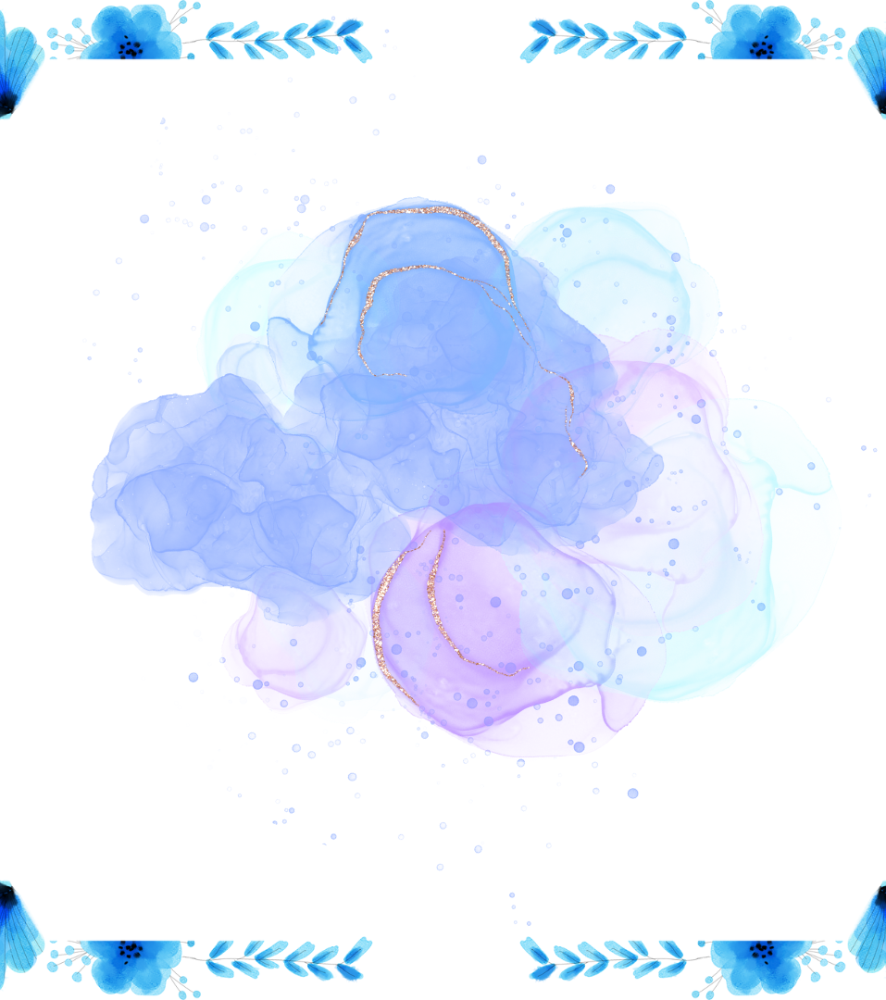

<mat-toolbar>
  <button class="back-page-btn" mat-mini-fab routerLink="/welcome">
    <mat-icon>west</mat-icon>
  </button>
</mat-toolbar>
<mat-card class="welcome-card">
  <mat-card-header>
    <mat-card-title>Dear Kiddo</mat-card-title>
  </mat-card-header>
  <mat-card-content>
    <div class="audio-img">
      
    </div>
  </mat-card-content>
  <mat-card-subtitle>Happy New Year to my favorite person.</mat-card-subtitle>
  <mat-card-actions>
    <button class="open-message-btn" mat-button (click)="openNewYearWishesDialog()">
      <mat-icon>redeem</mat-icon>message
    </button>
  </mat-card-actions>
</mat-card>
